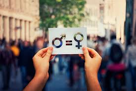

Nos permite replantearnos la visión androcéntrica (visión centrada en las necesidades y el estatus de los hombres) de las estructuras sociales: los conceptos elaborados para analizar el conjunto de la vida social dejan en la oscuridad a las mujeres, ignoradas o implícitamente consideradas como subordinadas, marginales. Manifiesta la voluntad de conseguir la igualdad real entre hombres y mujeres, dicha igualdad, por lo tanto, debe traducirse en igualdad de derechos y oportunidades. La igualdad entre mujeres y hombres es una cuestión de derechos humanos y una condición de justicia social; es también una cuestión básica, indispensable y fundamental para la igualdad entre las personas, para el desarrollo y la paz.
El principio de igualdad de trato entre mujeres y hombres supone la ausencia de toda discriminación, directa o indirecta, por razón de sexo, y, especialmente, las derivadas de la maternidad, la asunción de obligaciones familiares y el estado civil.

Mismas oportunidades para las mujeres y hombres, para cuidar su salud, estudiar, trabajar, participar en la toma de decisiones y construir su proyecto de vida. En el marco de la 70 Asamblea General de la ONU, México recibió de China la presidencia de la Cumbre de Igualdad de Género y Empoderamiento de las Mujeres.
el enfoque de igualdad de oportunidades para que el genero,la raza o etnicidad el lugar de nacimiento el entorno familiar y otras caracteristicas que estan fuera de control del individuo no influyan en los resultados de una persona el exito en la vida deve depender de deciciones de los individuos,el ezfuerzo y talento no en sus circunstancias al nacer.el grupo del banco mundial y sus asociados utilisan el indise de oportunidades humanas(IOH)para medir que tan equitativamente etan distribuidos los servicios vasicos .